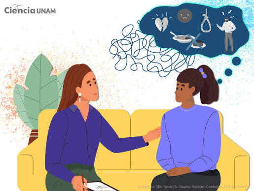

¿Qué es la salud mental en la adolescencia?
La salud mental en la adolescencia es un estado de bienestar
que permite a los jóvenes afrontar los cambios, desarrollar
sus capacidades y relacionarse con otras personas.

Problemas más comunes
- Ansiedad
- Depresión
- Trastornos de conducta
- Consumo de sustancias
- Uso excesivo de redes sociales
¿Cómo cuidar nuestra salud mental?
- Dormir adecuadamente.
- Realizar actividad física.
- Hablar sobre nuestras emociones.
- Pasar tiempo con familiares y amigos.
- Buscar ayuda cuando sea necesario.
Recuerda
Pedir ayuda cuando tenemos un problema es algo importante.
Hablar con una persona de confianza puede ayudarnos.